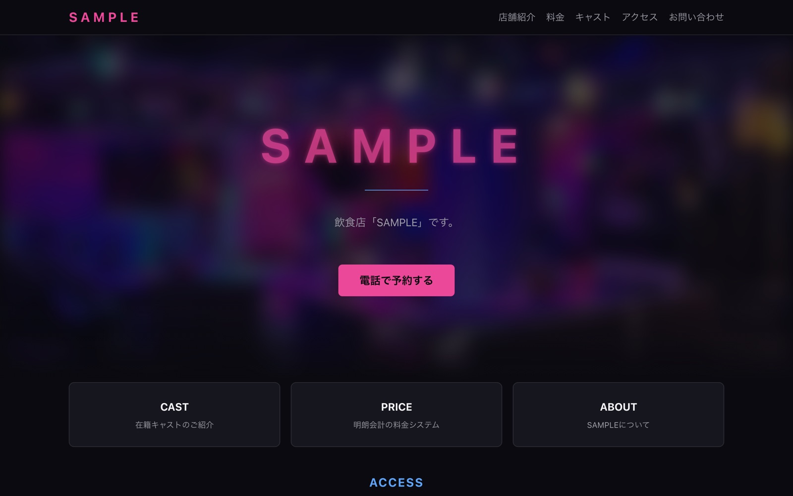
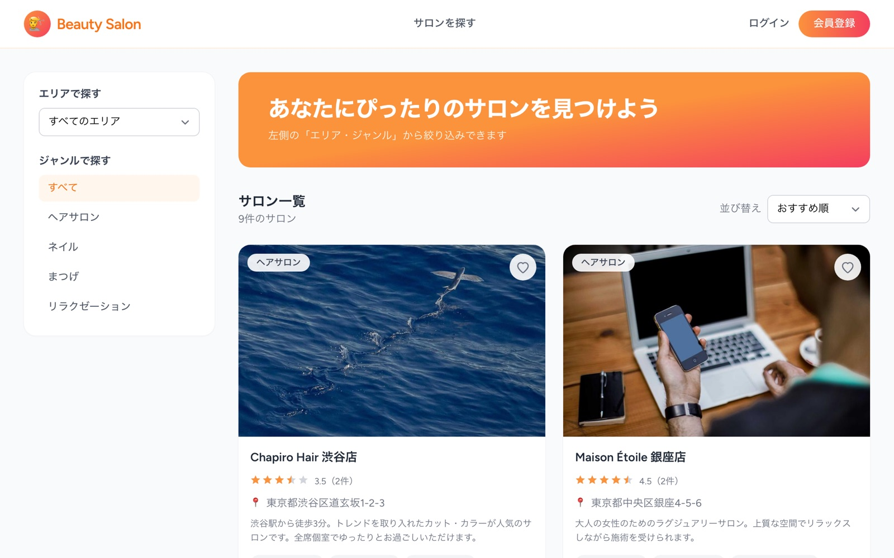
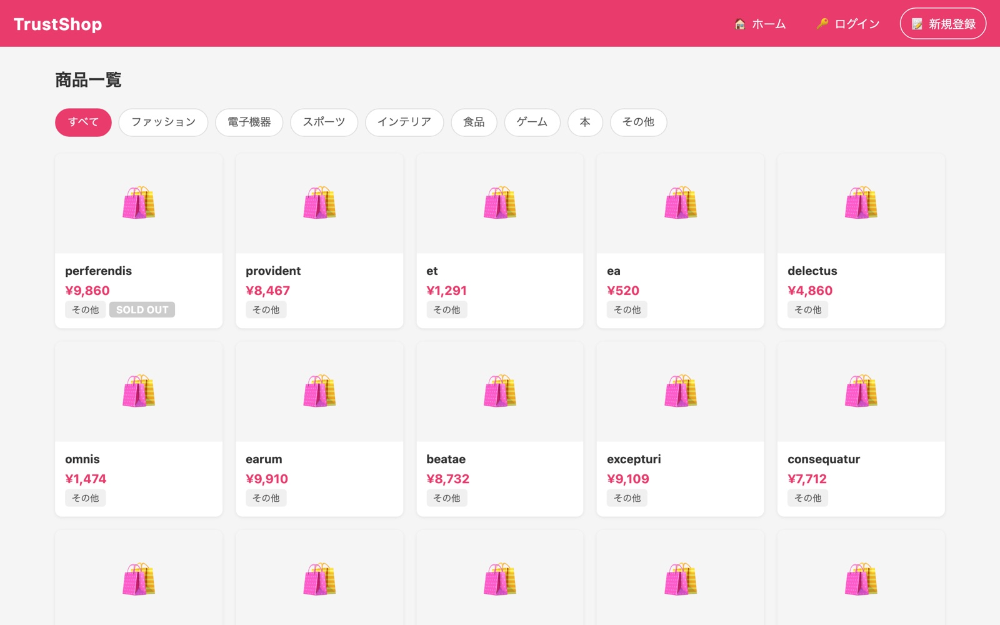
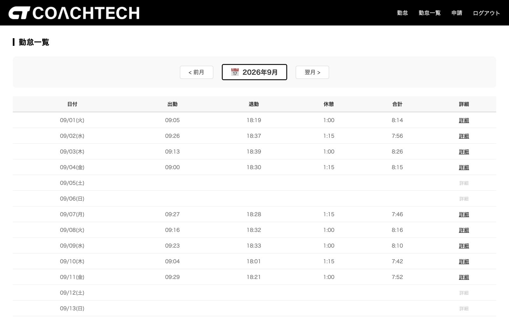
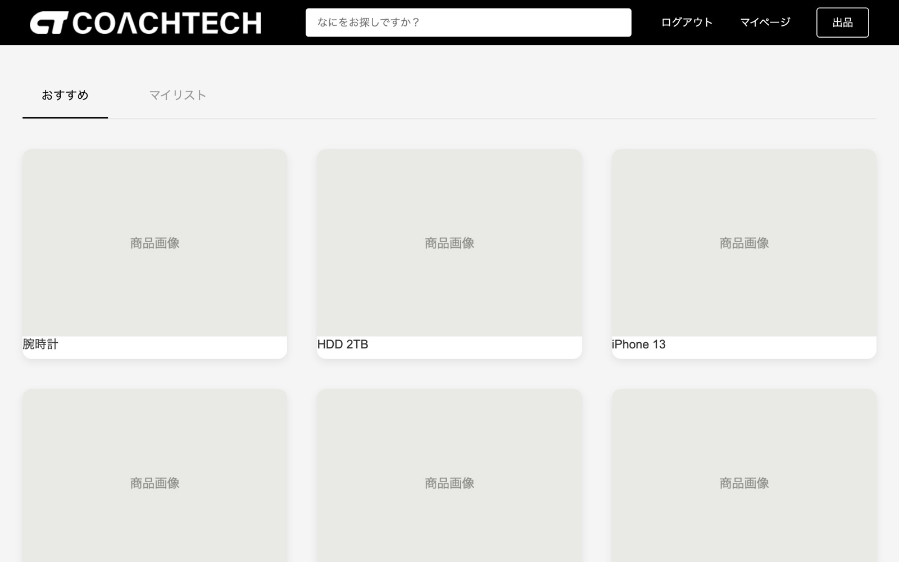

// web application engineer
Tomoya Ueda_
上田 友也
PHP・Laravel を軸に、要件整理からテストまで一人で形にします。インフラ運用の経験があるので、「動かす環境」まで含めて考えられます。
apps: 5
tests: 78 passing
infra_ops: 2y
location: Kyoto
about経歴
-
PC オンサイト修理・ヘルプデスク（1 年 7 ヶ月）
DELL・HP 製 PC の故障を電源・ストレージ・メモリ・マザーボードの順に切り分け、部品交換から動作確認まで担当。
-
ネットワーク監視オペレーター（8 ヶ月）
Zabbix によるネットワーク機器の 24 時間監視。アラートの一次対応とエスカレーション、障害報告書の作成。
-
Web アプリケーション開発を習得
オンラインスクールと独学で PHP・Laravel を習得。スクール課題 2 本のあと、個人開発 2 本と受託 1 本を完成させました。
学習の進め方
エラーが出たら、まず「どの層で壊れているか」をブラウザ・サーバーのログ・DB で切り分けます。解決したトラブルは症状から引ける形で全部記録しています。
使った技術を自分の言葉で説明できるように、技術解説サイト（全 59 章）を自分で執筆しています。
資格
skillsスキル
実務で使用 個人開発で使用 学習中
言語
- PHP 8.0 – 8.4（個人開発で使用）
- TypeScript（個人開発で使用）
- JavaScript（個人開発で使用）
- SQL（個人開発で使用）
- HTML / CSS（個人開発で使用）
フレームワーク・ライブラリ
- Laravel 8 / 10 / 13（個人開発で使用）
- React 18 / 19（個人開発で使用）
- Next.js 16（個人開発で使用）
- Inertia.js（個人開発で使用）
- Tailwind CSS（個人開発で使用）
- Stripe API（個人開発で使用）
データベース
- MySQL 8.0（個人開発で使用）
- テーブル設計・マイグレーション（個人開発で使用）
インフラ・環境
- Linux（実務で使用）
- Zabbix（実務で使用）
- Windows（実務で使用）
- Docker Compose（Nginx / PHP-FPM / MySQL）（個人開発で使用）
- AWS S3（個人開発で使用）
- AWS Lightsail（学習中）
テスト
- PHPUnit（個人開発で使用）
- Vitest（個人開発で使用）
ツール
- Git / GitHub（個人開発で使用）
- VS Code（個人開発で使用）
- GitHub Copilot（個人開発で使用）
- Claude Code（個人開発で使用）
works制作物
新しいものから順に。「詳細を見る」を押すと、課題・実装内容・詰まって解決した点が開きます。




works --verbose制作物の詳細
飲食店の店舗紹介サイト
- 課題
- 知人が経営する飲食店に Web サイトがなく、来店の問い合わせが電話に集中していました。主な客層はスマートフォンから検索して電話をかける年配の方で、「電話と LINE にすぐたどり着けること」「店側が自分でスタッフ情報を更新できること」が要件でした。
- 実装内容
- 公開サイト（Next.js）：店舗紹介・料金表・スタッフ一覧/詳細・アクセス・問い合わせフォーム・年齢確認ゲート
- API（Laravel）：店舗・スタッフ・料金プランの取得、問い合わせの受付
- 管理画面（Laravel + Blade）：ログイン認証、店舗情報編集、スタッフ・料金プランの CRUD、AWS S3 への画像アップロード・削除
- Docker Compose による開発環境（Nginx / PHP-FPM / MySQL）と、公開前チェックリストの作成
- 工夫した点・詰まって解決した点
- 「管理画面で更新しても公開サイトが変わらない」問題。エラーが出ないため Network タブで確認すると、API へのリクエスト自体が飛んでいませんでした。Next.js がページをビルド時に静的生成する仕様が原因と特定し、
cache: "no-store"で常に最新を取得するように修正しました。 - 「写真だけ削除」ボタンを押すとスタッフごと削除される不具合。
<form>を入れ子にしていたことが原因で、削除フォームを外側のフォームの外に分離して解決しました。 - 誰でも送信できる問い合わせ API に
throttle:5,1（1 分 5 回）のレート制限を設定。バリデーションは FormRequest に分離し、エラー文はlang/jaに集約しました。 - 風営法の許可番号や料金の税込表示など、技術以外で「勝手に決めてはいけない項目」を確認リストに分け、店舗に確認してから反映する運用にしました。
- 「管理画面で更新しても公開サイトが変わらない」問題。エラーが出ないため Network タブで確認すると、API へのリクエスト自体が飛んでいませんでした。Next.js がページをビルド時に静的生成する仕様が原因と特定し、
- 使用技術
- PHP 8.4 ／ Laravel 13.21 ／ Next.js 16.3 ／ React 19.2 ／ TypeScript 5.9 ／ Tailwind CSS 4 ／ MySQL 8.0 ／ Docker Compose ／ AWS S3 ／ Git / GitHub ／ VS Code ／ Claude Code
- 担当範囲
- 要件ヒアリング、仕様書・タスク管理ドキュメントの作成、DB 設計、API・管理画面・公開サイトの実装、動作確認（すべて 1 名で担当）
美容室の検索・予約サイト
- 課題
- 「予約」という業務は、利用者・サロン・スタッフ・メニュー・日時が絡み、ステータスも変化します。テーブル設計と認可（誰が何を操作できるか）を本格的に練習するため、Hot Pepper Beauty のような検索・予約サイトを題材に選びました。
- 実装内容
- 利用者向け：エリア・ジャンル検索、評価順・距離順ソート、サロン詳細（写真・メニュー・スタッフ・地図・口コミ）、メニュー → スタッフ → 日時 → 確認の 4 ステップ予約、予約履歴とキャンセル、お気に入り、レビュー投稿・編集・削除
- オーナー向け管理画面：サロン情報の編集、スタッフ・メニューの CRUD、画像アップロード、予約の承認・キャンセル
- 予約時にオーナーへ、承認・キャンセル時に利用者へ通知
- PHPUnit の Feature テスト 78 件、React コンポーネントの Vitest テスト
- 工夫した点・詰まって解決した点
- URL の ID を変えると他人のサロンを編集できてしまうことに気づき、調べて IDOR という脆弱性だと分かりました。全操作に所有者チェックを入れ、「他人のデータを操作すると 403 になる」ことをテストコードで確認しています。
- 当初クライアント側で行っていた検索・絞り込みを、データが増えても動くようサーバー側のクエリ（
when()による条件付き、withAvg()で平均評価を集計してソート、ページネーション）に作り直しました。 - Laravel と React を Inertia.js でつなぐ構成で、「どこまでがサーバーで、どこからがブラウザか」というデータの流れを理解するのに時間がかかりました。コントローラーが React ページに props を渡す形だと整理してから、実装が速くなりました。
- 使用技術
- PHP 8.4 ／ Laravel 13.20 ／ React 18.3 ／ TypeScript 5.9 ／ Inertia.js 2 ／ Tailwind CSS ／ MySQL 8.0 ／ Docker Compose ／ PHPUnit 12 ／ Vitest 4 ／ Git / GitHub ／ VS Code ／ GitHub Copilot ／ Claude Code
- 担当範囲
- 仕様検討、DB 設計（7 テーブル）、バックエンド・フロントエンドの実装、テスト作成（すべて 1 名で担当）
ネットショップ
- 課題
- スクール課題を終えたあと、認証・CRUD・FormRequest・認可・テストを、スターターキットに頼らず自分で組めるかを確かめるために作りました。
- 実装内容
- 会員登録・ログイン（コントローラーを自作）
- ショップの開設・編集・削除、商品の出品・編集・削除（画像アップロード対応）
- 商品の購入（在庫を 1 減らす。在庫 0 はエラー）、カテゴリによる絞り込み、自分の出品一覧、プロフィール編集
- PHPUnit の Feature テスト 8 ファイル・Unit テスト 5 ファイル（約 50 ケース）
- 工夫した点・詰まって解決した点
- 入力チェックを 6 つの FormRequest に分離し、コントローラーには検証後の処理だけを残しました。
- 「自分のショップは更新できるが、他人のショップは更新できない」といった認可の確認をテストに含め、テストメソッド名を日本語にして「何を確認しているか」がそのまま読めるようにしました。
- フリマアプリの経験があったため大きく詰まる箇所はなく、その分をテストの充実にあてました。
- 使用技術
- PHP 8.0 ／ Laravel 8.83 ／ MySQL 8.0 ／ Apache ／ Docker Compose ／ PHPUnit 9.6 ／ Git / GitHub ／ VS Code
- 担当範囲
- 設計・実装・テスト（すべて 1 名で担当）
勤怠管理アプリ
- 課題
- 一般スタッフが日々の出退勤・休憩を打刻し、管理者が全員の勤怠を確認・修正できる勤怠管理システムを、渡された要件定義をもとに実装する課題です。
- 実装内容
- 会員登録・メール認証・ログイン
- 出勤・休憩開始・休憩終了・退勤の打刻と、状態に応じたボタン制御
- 月次カレンダーでの勤怠一覧、日付別・スタッフ別の表示
- 打刻の修正申請と、管理者による承認フロー
- 月次勤怠データの CSV 出力
- 工夫した点・詰まって解決した点
- 1 日に複数回取得する休憩時間の合算と、実労働時間の計算。
- 日付をまたぐ勤務（深夜勤務）の扱い。
- 修正申請 → 管理者の承認 → 勤怠データへの反映、という状態遷移の設計。
- 使用技術
- PHP 8.2 ／ Laravel 10.50 ／ MySQL 8.0 ／ Docker Compose（Nginx / PHP-FPM）／ Git / GitHub ／ VS Code ／ GitHub Copilot
- 担当範囲
- 詳細設計・実装・テスト・修正（1 名）
フリマアプリ
- 課題
- ユーザー同士で商品を出品・購入できるフリマアプリを、渡された要件定義をもとに実装する課題です。初めて要件から完成まで通して作った Laravel アプリです。
- 実装内容
- 会員登録・メール認証・ログイン／ログアウト
- 商品の出品・購入、お気に入り、コメント
- プロフィール編集、購入履歴・出品履歴
- Stripe API による支払い方法の選択と決済、配送先住所の変更
- 工夫した点・詰まって解決した点
- バリデーションを FormRequest にどう分けるか（画面ごとに分けるか、共通化するか）の判断。
- 初めて本格的にデバッグをした案件。エラー文を読む → ログを見る → 該当箇所を絞る、という手順をここで身につけました。
- Stripe のテストモードの設定と、決済フローの動作確認。
- 初めて単体テスト・結合テストのコードを作成。
- 使用技術
- PHP 8.2 ／ Laravel 8.83 ／ MySQL 8.0 ／ Docker Compose（Nginx / PHP-FPM）／ Stripe API ／ Git / GitHub ／ VS Code
- 担当範囲
- 詳細設計・実装・テスト・修正（1 名）
contact連絡先
ご連絡は以下からお願いします。京都在住で、京都・大阪への出社にも対応できます。
- emailtoatomo2913@gmail.com
- githubgithub.com/taotomo